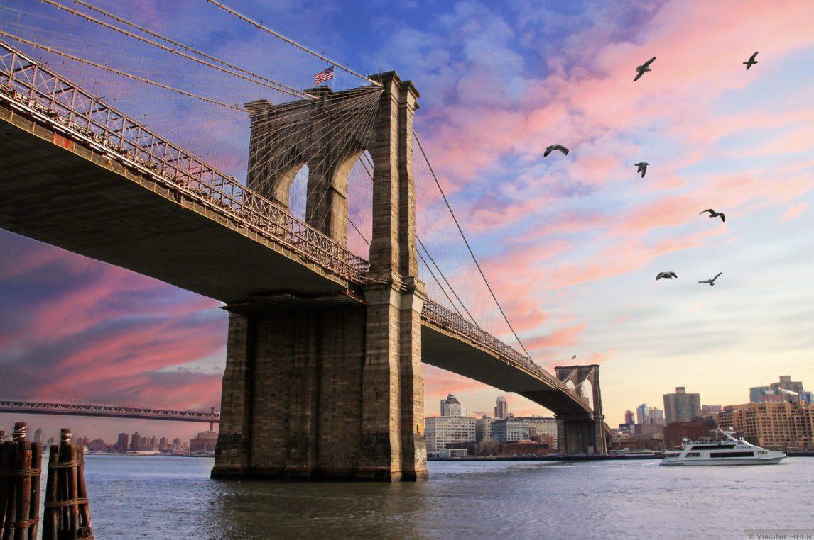

Times Square
Bright lights, big screens, and endless energy — this is the heartbeat of NYC.

Central Park
A green escape in the heart of Manhattan. Relax, walk, or boat in this iconic park.

Brooklyn Bridge
Walk across history and enjoy amazing views of the skyline and East River.